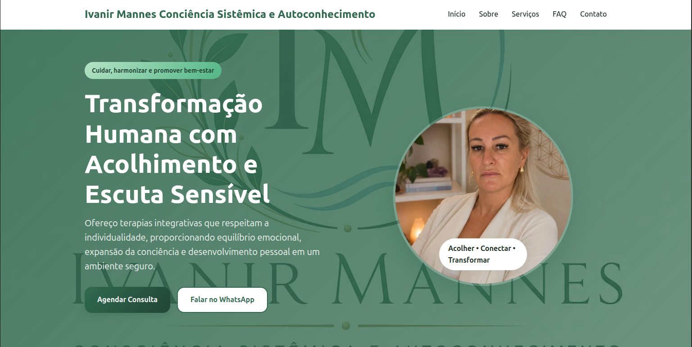
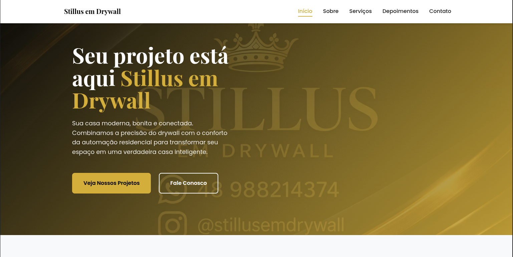

ChatGPT e Codex
Apoio à programação, resolução de problemas e desenvolvimento de soluções digitais.
DESENVOLVIMENTO WEB
Desenvolvimento de sites e aplicações modernas, responsivas e funcionais.
SOBRE MIM
Sou desenvolvedora web e freelancer, com experiência no desenvolvimento de sites para clientes reais. Meu foco é criar soluções digitais modernas, responsivas e funcionais, utilizando tecnologias como HTML, CSS e JavaScript para proporcionar uma boa experiência aos usuários.
Continuo aprimorando meus conhecimentos em desenvolvimento front-end e back-end, explorando tecnologias como React, TypeScript, Node.js, PostgreSQL e Docker. Também desenvolvo minhas habilidades no uso de assistentes de IA como apoio à programação, à resolução de problemas e à criação de soluções.
Minha atuação como freelancer também inclui a criação de apresentações, catálogos digitais, agentes de inteligência artificial e soluções para automação de tarefas.
Concluí o curso Inteligência Artificial Express, ministrado pelo professor Ítalo Teotonio, e venho aprofundando meus conhecimentos em inteligência artificial e engenharia de prompts, utilizando o método SMART para estruturar solicitações de forma mais clara e objetiva. Exploro diferentes ferramentas de IA para ampliar minhas possibilidades de criação e desenvolvimento de soluções digitais.
TECNOLOGIAS
INTELIGÊNCIA ARTIFICIAL
Exploro ferramentas de inteligência artificial para apoiar a programação, a criação de conteúdos, o desenvolvimento de aplicações e a automação de tarefas.
Apoio à programação, resolução de problemas e desenvolvimento de soluções digitais.
Criação de apresentações e conteúdos visuais para comunicar ideias e projetos.
Exploração de recursos de inteligência artificial para pesquisa, criação e organização de informações.
Apoio à pesquisa, organização e síntese de informações a partir de fontes.
Organização e estruturação de ideias para planejar projetos e conteúdos.
Criação de aplicações digitais com apoio de inteligência artificial.
Exploração de recursos de IA para apoiar a execução de tarefas e fluxos de trabalho.
Assistência à escrita, análise de informações e desenvolvimento de código.
Conhecimentos desenvolvidos no curso Inteligência Artificial Express, incluindo o uso do método SMART para estruturar prompts de forma clara e objetiva.
PORTFÓLIO

CLIENTE REAL
Site profissional desenvolvido para apresentação de serviços na área de terapias integrativas e autoconhecimento.

CLIENTE REAL
Landing page profissional desenvolvida para apresentação da empresa, serviços e projetos em drywall.
CONTATO
Estou aberto a oportunidades, projetos e novos desafios em desenvolvimento web.